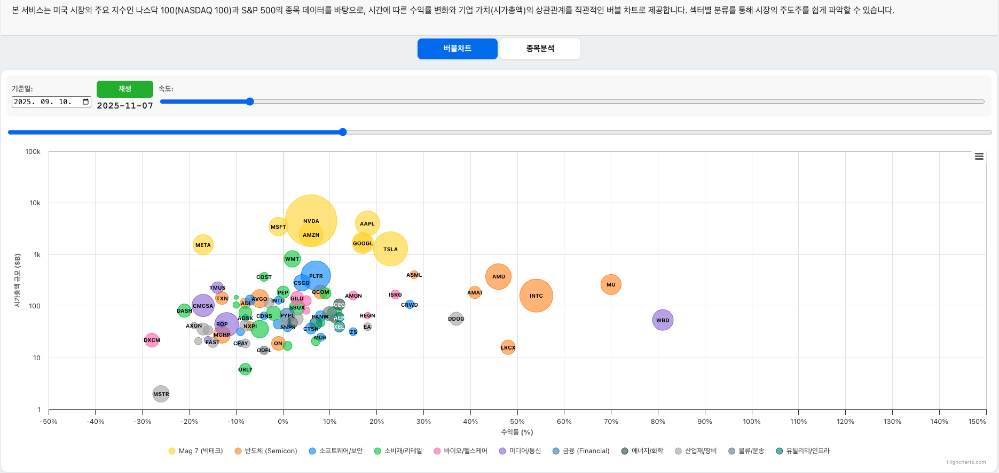

무빙 버블 차트는 시간에 따른 주식 시장의 역동적인 변화를 시각화하여 보여주는 도구입니다. 아래 가이드를 통해 차트를 효과적으로 활용하는 방법을 알아보세요.
기준일 선택: 차트 상단의 '기준일' 날짜를 변경하면 해당 날짜부터의 수익률 변화를 계산합니다. 특정 이벤트(예: 실적 발표, 금리 결정) 이후의 성과를 분석할 때 유용합니다.
재생/일시정지: '재생' 버튼을 누르면 시간이 흐름에 따라 버블이 움직이며 주가 변화를 보여줍니다. 다시 누르면 일시정지됩니다.
속도 조절: 선택 상자를 통해 애니메이션 배속을 조절할 수 있습니다. 0.25배속부터 4배속까지 지원하며, 변화를 자세히 관찰하려면 느리게, 전체적인 흐름을 보려면 빠르게 설정하세요.
데이터 슬라이더: 하단의 긴 슬라이더를 드래그하여 특정 시점으로 빠르게 이동할 수 있습니다. 과거 특정 시점의 시장 상황을 즉시 확인할 수 있습니다.
마우스 오버: 특정 버블 위에 마우스를 올리면 해당 종목의 이름, 티커, 그리고 기준일 대비 상세 수익률 정보를 확인할 수 있습니다.
버블 크기: 각 버블의 크기는 해당 기업의 상대적인 시가총액 규모를 나타냅니다. 큰 버블은 시장의 주도주를 의미합니다.
Top 10 필터: 특정 기준에 따라 상위 10개 종목만 선별하여 볼 수 있습니다.
상단 메뉴: 나스닥 100, S&P 500 등 분석하고 싶은 지수를 상단 드롭다운 메뉴에서 선택하면 즉시 해당 지수 종목들로 차트가 구성됩니다.
60일 경과 후의 시장 모습: 아래 이미지는 나스닥 100 지수의 기준일로부터 약 60일이 경과했을 때의 모습입니다. 수익률에 따라 버블들이 우상향하거나 좌하향하며 시장의 흐름을 보여줍니다.

[나스닥 100 버블차트 분석 예시: 수익률과 시가총액의 상관관계]